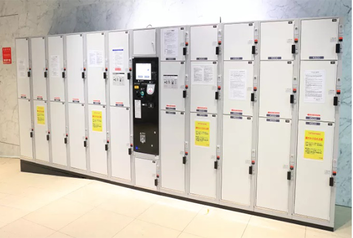
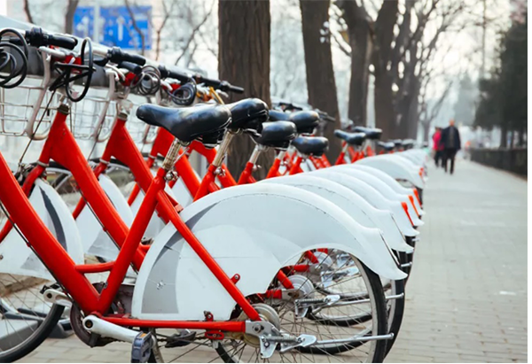

10 bí kíp
để chuyến du lịch
Nhật Bản dễ dàng
và tiện lợi hơn
bao giờ hết!
10 bí kíp để chuyến
du lịch Nhật Bản dễ dàng,
tiện lợi hơn bao giờ hết!
10 bí kíp để chuyến du lịch Nhật Bản dễ dàng và tiện lợi hơn bao giờ hết!
Du lịch Nhật Bản tuy rất hấp dẫn, nhưng chính sự phong phú và phức tạp của chuyến đi đôi lúc sẽ khiến bạn cảm thấy khó khăn. Nhưng đừng lo, hãy tận dụng ngay 10 bí kíp du lịch Nhật từ Cảm nhận Nhật Bản để có một chuyến đi "thuận buồm xuôi gió"!
Rất nhiều du khách đến Nhật vẫn chưa biết đến việc tận dụng những tiện ích sẵn có tại quốc gia này để giúp chuyến du lịch trở nên dễ dàng hơn. Từ tủ gửi đồ bằng tiền xu cho đến cafe truyện tranh.
Nơi quy tụ những bức tượng tuyết vĩ đại nhất thế giới
Du lịch Nhật Bản tuy rất hấp dẫn, nhưng chính sự phong phú và phức tạp của chuyến đi đôi lúc sẽ khiến bạn cảm thấy khó khăn. Nhưng đừng lo, hãy tận dụng ngay 10 bí kíp du lịch Nhật từ Cảm nhận Nhật Bản để có một chuyến đi "thuận buồm xuôi gió"!
Rất nhiều du khách đến Nhật vẫn chưa biết đến việc tận dụng những tiện ích sẵn có tại quốc gia này để giúp chuyến du lịch trở nên dễ dàng hơn. Từ tủ gửi đồ bằng tiền xu cho đến cafe truyện tranh.
Cửa hàng tiện lợi
Cửa hàng tiện lợi chính là điểm đến để bạn có thể mua tất cả đồ ăn liền và thức uống mà cần thiết. Với mật độ hàng ngàn cửa hàng trên khắp Tokyo, thông thường từ cửa hàng này đến cửa hàng kế tiếp chỉ cách nhau vài dãy nhà. Cửa hàng tiện lợi tại Nhật hoạt động 24/7 và cung cấp dịch vụ ATM, đồ uống có cồn & thuốc lá, trang bị máy in & photo copy cũng như có hẳn nhà vệ sinh tại một vài cửa tiệm.
Ứng dụng tàu điện
Để "làm chủ" hệ thống giao thông công cộng tại Nhật, hãy sử dụng những ứng dụng điện thoại theo dõi lịch tàu chạy. Bên cạnh 2 ứng dụng nổi tiếng là Hyperdia hay Jorudan, hầu hết các ứng dụng tàu điện tại Nhật sẽ cho bạn rất nhiều lựa chọn về phương tiện di chuyển và cung đường thích hợp khi bạn nhập điểm khởi hành hay thời gian cần đến.
Thẻ tàu
Việc mua vé tàu có mệnh giá đúng với từng chuyến cần đi sẽ khá rắc rối với du khách. Để tránh những căng thẳng không cần có, hãy sử dụng thẻ Pasmo hoặc Suica để nạp tiền trước, sau đó khi đi tàu bạn chỉ việc quẹt thẻ và tiền vé tàu sẽ tự động được khấu trừ vào tài khoản trong thẻ. Thẻ có thể được nạp tiền tại bất kì ga tàu nào, cùng với 500 JPY để đặt cọc thẻ là bạn đã sẵn sàng lên đường! Những loại thẻ này hiện nay đang trở nên vô cùng tiện dụng khi được chấp nhận tại các máy bán hàng tự động, cửa hàng tiện lợi cùng một số dịch vụ khác.
Thẻ tàu điện 1 ngày
Tokyo, Kyoto, Osaka và các thành phố khác đều phát hành thẻ tàu điện 1 ngày. Mặc dù chỉ giới hạn sử dụng cho tàu điện ngầm và không bao gồm các tuyến tàu tư nhân, điểm cộng lớn khi sử dụng loại thẻ này chính là bạn có thể thoả thích di chuyển trên hệ thống tàu điện rộng lớn trong ngày mà không lo về chi phí.
Cà phê truyện tranh
Tokyo, Kyoto, Osaka và các thành phố khác đều phát hành thẻ tàu điện 1 ngày. Mặc dù chỉ giới hạn sử dụng cho tàu điện ngầm và không bao gồm các tuyến tàu tư nhân, điểm cộng lớn khi sử dụng loại thẻ này chính là bạn có thể thoả thích di chuyển trên hệ thống tàu điện rộng lớn trong ngày mà không lo về chi phí.
Khách sạn tình yêu
Tại tất cả các thành phố trọng điểm ở Nhật đều có các khách sạn tình yêu nằm gần các ga lớn. Đừng quá "hoảng sợ" với cái tên đầy ấn tượng, những khách sạn tình yêu này chỉ đơn giản dành cho du khách đơn, hoặc là một chọn lựa thú vị cho các cặp đôi. Những căn phòng được trang trí theo chủ đề, có bồn tắm jacuzzi và nhiều tiện nghi thường chỉ được cho thuê trong ngày. Mặc dù hầu hết các khách sạn tình yêu đều kín phòng vào thời điểm cuối tuần, đây là một nơi nghỉ chân đáng tin cậy
Tủ gửi đồ
Khi đến Nhật, bạn sẽ nhận ra luôn có một dãy tủ gửi đồ tại gần như tại tất cả ga tàu và nhiều trung tâm mua sắm. Với chi phí từ 200 ~ 800 JPY, dịch vụ này giúp mọi người có thể tạm thời để đồ lại và đi du lịch trong ngày, hoặc tạm cất bớt đồ vừa mua sắm xong để tiếp tục tham quan. Tuy nhiên hãy lưu ý là thường các tủ đồ chỉ giới hạn thời gian 24 giờ, và bạn sẽ phải trả thêm phí nếu gửi quá giờ.
Dịch vụ chuyển phát Yamato Kuroneko
Nếu không thể đóng tất cả đồ đạc vào hành lí thì đừng lo, bạn vẫn có thể sử dụng dịch vụ chuyển phát Yamato Kuroneko để gửi đồ về tận nhà. Dịch vụ này có mặt tại sân bay cùng nhiều điểm khác, bao gồm cả cửa hàng tiện lợi, với mức giá phải chăng và dịch vụ đáng tin cậy.
Đồn cảnh sát (Koban)
Cảnh sát Nhật thường có mặt tại những đồn cảnh sát được gọi là Koban. Các đồn cảnh sát có vị trí ở gần ga tàu, hoặc những khu vực có mật độ giao thông cao và hữu ích trong nhiều tình huống, không chỉ giới hạn ở việc trình báo tội phạm. Hầu hết sĩ quan cảnh sát tại Nhật đều được huấn luyện để ghi nhớ khu vực phụ trách, vì thế họ thường là người đầu tiên được người Nhật tìm đến khi muốn hỏi đường. Mặc dù khó có thể đảm bảo tất cả cảnh sát Nhật đều có thể nói tiếng Anh, nhưng họ chắc chắn sẽ giúp bạn đến nơi cần đến bằng cử chỉ và bản đồ.
Dịch vụ thuê xe đạp
Mặc dù Nhật Bản không phải là quốc gia ưu tiên cho người đi xe đạp như một vài nước khác, bạn vẫn có thể tìm thấy dịch vụ thuê xe đạp tại các điểm du lịch nổi tiếng ở nơi đây. Xe đạp là cách khám phá đường phố với mức giá rẻ, để bạn có thể ra khỏi các con đường chính, sống xanh và đốt cháy năng lượng. Hầu hết các thành phố trọng điểm ở Nhật sẽ có các cửa hàng cho thuê xe đạp được chỉ định, bạn có thể nghiên cứu trước khi bắt đầu chuyến đi.
